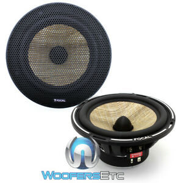

| What exactly is a three-way speaker ! ? |
|
|
| Tweeter |
| The size is usually small (usually 1 inch to 1 inch and a half, but also scanspeak tweeter can reach 2 inches) |
| Responsible for playing the high pitch, the voice is fine |
| If you play too low frequency, it will burn out |
| |
| Mid Woofer Speaker |
| The size can be divided into 4 inches, 5 inches, 6 inches, 7 inches and other body types |
| Play bass, midrange, and mid-treble frequencies, filling the sound of frequencies that tweeter cannot play |
|  |
|
| Mid Range Speaker |
| The general body size is 2.5 inches and 3 inches, and the larger ones are 4 inches. |
| Responsible for most of the vocals and musical instruments. It will be used to match when playing 3way. At this time, mid woofer sauce will only be responsible for the bass frequency |
|